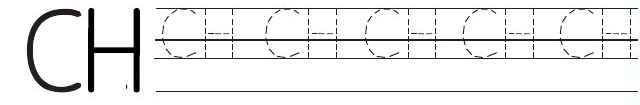

Somo la nane: Kuandika konsonanti CH
Somo la nane
Kuandika konsonanti CH
Katika somo hili utajifunza kuandika konsonanti
CH.
Fuatisha konsonanti CH.

Andika jibu kwa mkono katika sehemu hii.
Andika herufi ya konsonanti hii kwenye daftari.
Mfano wa kuangalia
Andika jibu kwa mkono katika sehemu hii.
Andika majina haya kwenye daftari.

Andika jibu kwa mkono katika sehemu hii.